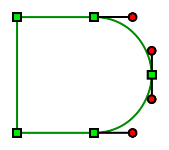

Next: gEDA File Format Document Revision History, Previous: Embedded Components, Up: gEDA file format [Contents][Index]
The gEDA/gaf path data format has been deliberately specified to match a subset of that in the W3C SVG standard..
(Text taken from the above SVG specification).
| Command | Name | Parameters | Description |
| M (absolute) | moveto | (x,y)+ | Start a new sub-path at the given (x,y) coordinate. M (uppercase) indicates that absolute coordinates will follow; m (lowercase) indicates that relative coordinates will follow. If a relative moveto (m) appears as the first element of the path, then it is treated as a pair of absolute coordinates. If a moveto is followed by multiple pairs of coordinates, the subsequent pairs are treated as implicit lineto commands. |
| L (absolute) | lineto | (x,y)+ | Draw a line from the current point to the given (x,y) coordinate which becomes the new current point. L (uppercase) indicates that absolute coordinates will follow; l (lowercase) indicates that relative coordinates will follow. A number of coordinates pairs may be specified to draw a polyline. At the end of the command, the new current point is set to the final set of coordinates provided. |
| C (absolute) | curveto | (x1,y1 x2,y2 x,y)+ | Draws a cubic Bézier curve from the current point to (x,y) using (x1,y1) as the control point at the beginning of the curve and (x2,y2) as the control point at the end of the curve. C (uppercase) indicates that absolute coordinates will follow; c (lowercase) indicates that relative coordinates will follow. Multiple sets of coordinates may be specified to draw a polybézier. At the end of the command, the new current point becomes the final (x,y) coordinate pair used in the polybézier. |
| Z or z | closepath | (none) | Close the current subpath by drawing a straight line from the current point to current subpath’s initial point. |
As example, lets draw the outline of an AND gate. The path data is:
M 100,100 L 500,100 C 700,100 800,275 800,400 C 800,525 700,700 500,700 L 100,700 z
And a complete schematic:
v 20080706 1 H 3 0 0 0 -1 -1 0 2 20 100 -1 -1 6 M 100,100 L 500,100 C 700,100 800,275 800,400 C 800,525 700,700 500,700 L 100,700 z
The resulting path (with control points drawn on to illustrate their positions) is shown here:
Next: gEDA File Format Document Revision History, Previous: Embedded Components, Up: gEDA file format [Contents][Index]